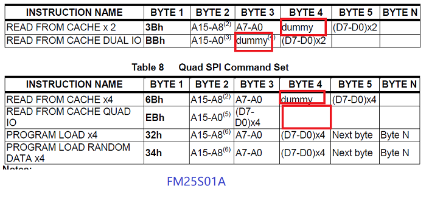
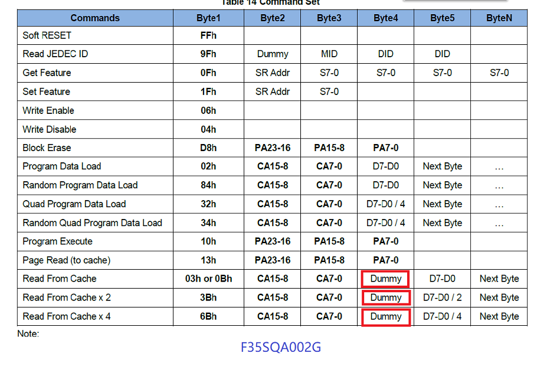
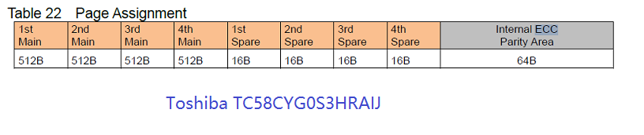
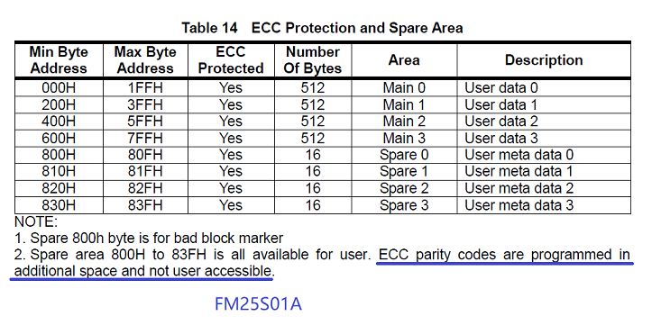
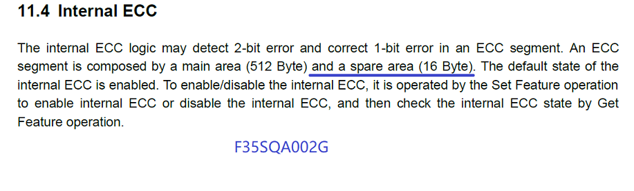

配置 xxx_spinand_table
xxx_spinand_table 数据结构为第二级索引，描述厂商的系列器件信息，是 SPI NAND
驱动的核心，描述了下列参数信息：static const struct spinand_info foresee_spinand_table[] = {
SPINAND_INFO("F35SQA002G",
SPINAND_ID(SPINAND_READID_METHOD_OPCODE_DUMMY, 0x72),
NAND_MEMORG(1, 2048, 64, 64, 2048, 40, 1, 1, 1),
NAND_ECCREQ(1, 528),
SPINAND_INFO_OP_VARIANTS(&read_cache_variants,
&write_cache_variants,
&update_cache_variants),
SPINAND_HAS_QE_BIT,
SPINAND_ECCINFO(&f35sqa_ooblayout,
f35sqa_ecc_get_status)),
};配置 NAND_MEMORG
memorg 通过 NAND_MEMORG 结构描述。一般情况下，器件数据手册会在开头描述
memorg 信息。NAND_MEMORG
的参数示例描述如下：#define NAND_MEMORG(bpc, ps, os, ppe, epl, mbb, ppl, lpt, nt)
{
.bits_per_cell = (bpc), // Cell 是 NAND 的最小单元，一般只能存储 1bit，少有其他值得
.pagesize = (ps), // 页大小，大部分的器件的页通过（N + Mbytes）的方式描述，N 为页大小，M 为 oob
.oobsize = (os), //界外大小，一般用于存放 ECC 校验数据或其它数据，和 pagesize 共同描述
.pages_per_eraseblock = (ppe), // 一个擦除块有多少个页
.eraseblocks_per_lun = (epl), // 一个 lun（die）有多少个擦除块,1Gb/(64 x 2048 x 8) = 1024
.max_bad_eraseblocks_per_lun = (mbb), //器件出厂的最大坏块数，一般在数据手册中通过 bad blocks 查找到
.planes_per_lun = (ppl), //一般设置为 1，单 die
.luns_per_target = (lpt), //一般设置为 1
.ntargets = (nt), //一般设置为 1
}配置 FM25S01A 中的 NAND_MEMORG
对于 FM25S01A，按照下列描述配置参数 NAND_MEMORG (1, 2048, 64, 64, 1024, 20, 1, 1,
1)
-
single cell， 则 bpc 设置为 1
-
Page size： 2048 + 64 bytes， 则 pagesize = 2048， oobsize = 64
-
Block size： 64 pages， 则 pages_per_eraseblock = 64
-
eraseblocks_per_lun 通过计算所得，该器件容量为 1Gb，一个 block 的容量为 （64 pages x 2048 bytes）= 128KB，则 1Gb / 128KB = 1024, 注意 bit 和 byte 的单位
-
max_bad_eraseblocks_per_lun：0014h (16 进制) = 20（十进制）
-
ppl，lpt，nt 描述的是该器件中有几个单元，大部分为 1，lun 对应器件上的 die，即有几个晶圆
配置 F35SQA002G 中的 NAND_MEMORG
对于 F35SQA002G，按照下列描述配置参数 NAND_MEMORG(1, 2048, 64, 64, 2048, 40, 1,
1, 1)
-
cell 未明确， bpc 设置为 1
-
Page size： 2k + 64 bytes， 则 pagesize = 2048， oobsize = 64
-
Block size： 64 pages， 则 pages_per_eraseblock = 64
-
eraseblocks_per_lun 通过计算所得，该器件容量为 2Gb（256MB），一个 block 的容量为 （64 pages x 2048 bytes）= 128KB，则 256M / 128KB = 2048
-
max_bad_eraseblocks_per_lun：0028h (16 进制) = 40 （十进制）
-
ppl，lpt，nt 描述的是该器件中有几个单元，大部分为 1，lun 对应器件上的 die，即有几个晶圆
NAND_ECCREQ
Error Correcting Code (ECC)，可以在数据手册中搜索 ECC 字样获得， 如 F35SQA002G 数据手册描述示例所示。 NAND_ECCREQ 参数用来描述每个 stp byte
包含多少位的内部 ECC：
-
对于 FM25S01A：NAND_ECCREQ(1, 512)
-
对于 F35SQA002G：NAND_ECCREQ(1, 528)
#define NAND_ECCREQ(str, stp) { .strength = (str), .step_size = (stp) }SPINAND_INFO_OP_VARIANTS
#define SPINAND_INFO_OP_VARIANTS(__read, __write, __update) \
{ \
.read_cache = __read, \
.write_cache = __write, \
.update_cache = __update, \
}- read_cache_variants
根据数据手册中的命令列表，为不同的总线宽度配置读取缓存操作。可以在数据手册中搜索 commands 或者 command set 获得 command 列表进行设置。例如：
SPINAND_PAGE_READ_FROM_CACHE_QUADIO_OP(0, 1, NULL, 0), //command id：0xeb SPINAND_PAGE_READ_FROM_CACHE_X4_OP(0, 1, NULL, 0), //command id：0x6b SPINAND_PAGE_READ_FROM_CACHE_DUALIO_OP(0, 1, NULL, 0), //command id：0xbb SPINAND_PAGE_READ_FROM_CACHE_X2_OP(0, 1, NULL, 0), //command id：0x3b SPINAND_PAGE_READ_FROM_CACHE_OP(true, 0, 1, NULL, 0), //command id：0x0b SPINAND_PAGE_READ_FROM_CACHE_OP(false, 0, 1, NULL, 0)); //command id：0x03-
SPINAND_PAGE_READ_FROM_CACHE_QUADIO_OP(0, 1, NULL, 0)
- (0, 1, NULL, 0) 分别表示地址、dummy 的 bite 长度、读取数据的 buf
以及读取数据的长度参数。详细配置值解析如下：
- 0：后续赋值，以此设为规定值 0。
- 1：大部分为 1，少数部分为 2，可在数据手册中查找获得。
如果器件对 0xeb 的 dummy 没有明确标识，则设置为 1。
- NULL：续赋值，此处固定为 NULL。
- 0：后续赋值，所以设置为固定值 0。
- 在 (0, 1, NULL, 0) 代表的四个参数中，仅需从数据手册中去获取 dummy 的长度即可，其他均赋固定值。
- 如果器件支持的命令较少，需要去掉部分不支持的操作。可根据 variants 的 command id 来判断，如```F35SQA002G```不支持 0xeb 和 0xbb 命令。
- (0, 1, NULL, 0) 分别表示地址、dummy 的 bite 长度、读取数据的 buf
以及读取数据的长度参数。详细配置值解析如下：
- SPINAND_PAGE_READ_FROM_CACHE_OP
-
设置两次，分别设为 normal read 0x3 和 fast read 0xb
-
第一个参数为 fast read 标志，对于支持 0x0b 和 0x03 两个命令的器件，此二者必须成对存在，并且参数一致


-
-
- write_cache_variants
所有器件的写缓存操作设置都一致，不需要根据数据手册更改：
static SPINAND_OP_VARIANTS(update_cache_variants, SPINAND_PROG_LOAD_X4(false, 0, NULL, 0), SPINAND_PROG_LOAD(false, 0, NULL, 0)); - update_cache_variants
所有器件的更新缓存操作设置都一致，不需要根据数据手册更改：
static SPINAND_OP_VARIANTS(update_cache_variants, SPINAND_PROG_LOAD_X4(false, 0, NULL, 0), SPINAND_PROG_LOAD(false, 0, NULL, 0));
SPINAND_ECCINFO
SPI NAND 的坏块管理分为两部分：器件内部硬件逻辑进行的管理，和器件对外提供给用户手工操作的管理逻辑。
ECCINFO 即表示对外暴露给用户进行手工操作的区域。即便不设置 ECCINFO 信息，坏块管理依然处于工作状态。器件自身的坏块管理更高效，因此一般占 ECC 容量的大部分。现在大部分器件都不再提供用户操作接口，因为使用门槛比较高。
-
Toshiba 的 TC58CYG0S3HRAIJ 的 ECC 为 64Byte：

- 使用定义宏
SPINAND_ECCINFO定义 ECCINFO 结构体，其中包含两个函数指针：ooblayout和get_status：#define SPINAND_ECCINFO(__ooblayout, __get_status) .eccinfo = { .ooblayout = __ooblayout, //ooblayot 操作函数集合 .get_status = __get_status, //获取 ECC 状态 } -
配置
toshiba_spi_nand的 ECCINFO，示例如下：static int tx58cxgxsxraix_ooblayout_ecc(struct mtd_info *mtd, int section, struct mtd_oob_region *region) { if (section > 0) return -ERANGE; region->offset = mtd->oobsize / 2; //ECC 总长度为 128Byte，64B 为对外 region->length = mtd->oobsize / 2; //长度也为 64 return 0; }
- 使用定义宏
-
FM25S01A 和 F35SQA002G 两款器件都没有提供外部使用接口：

